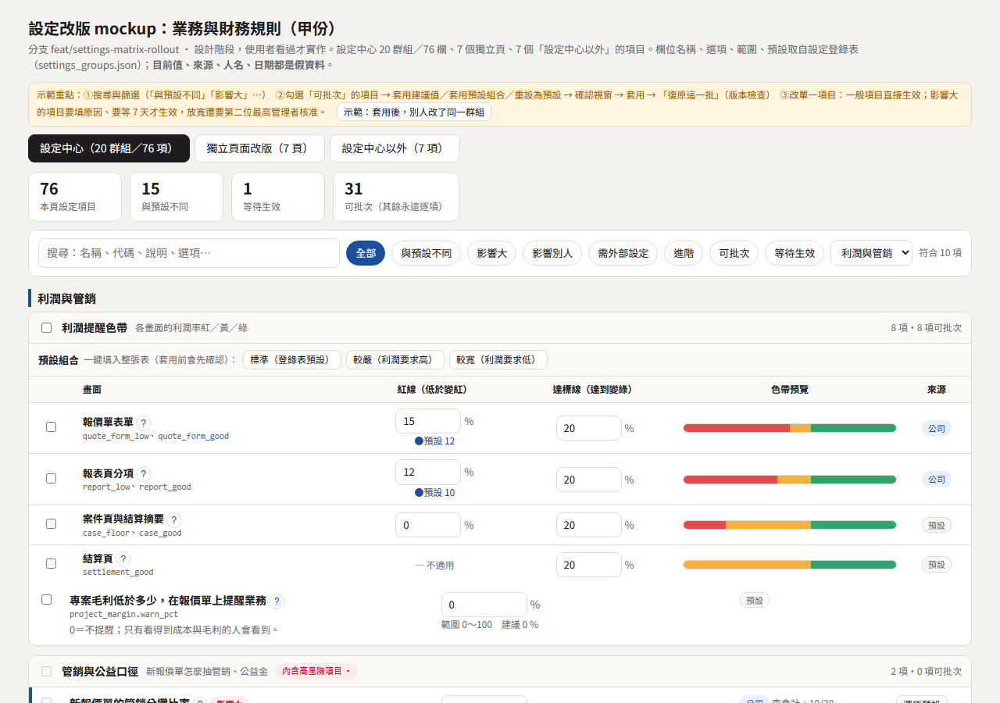
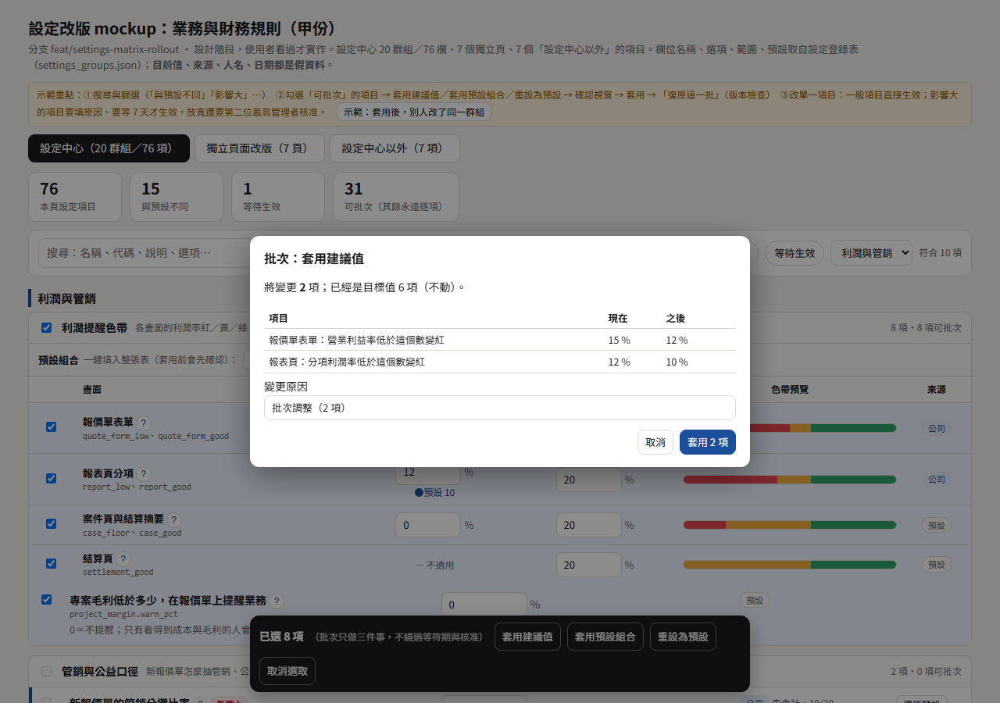
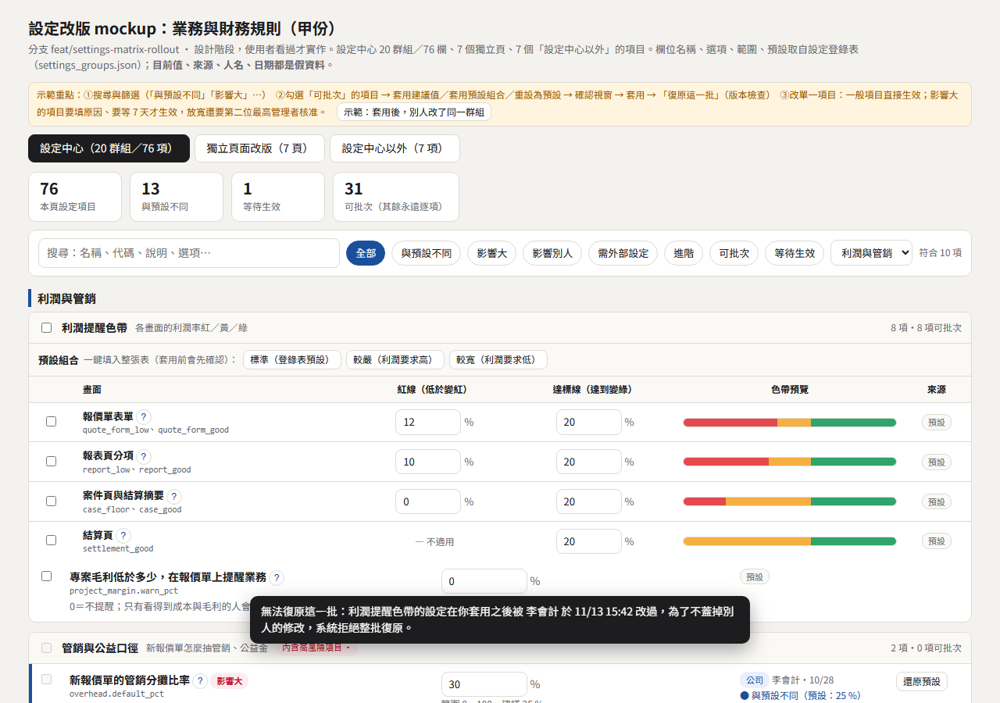
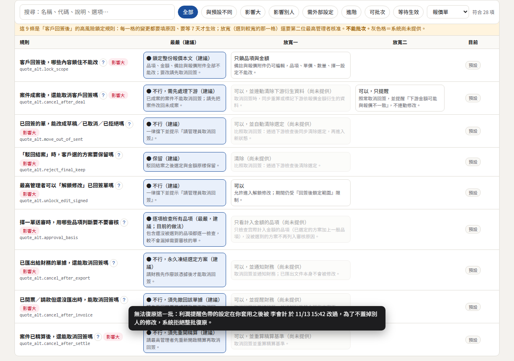
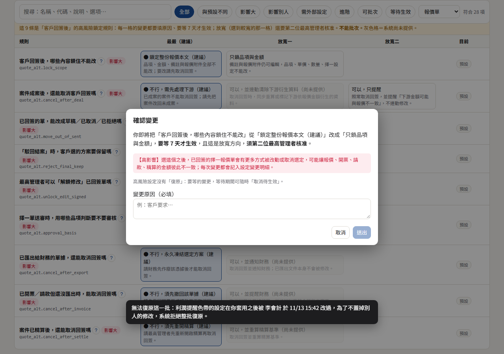
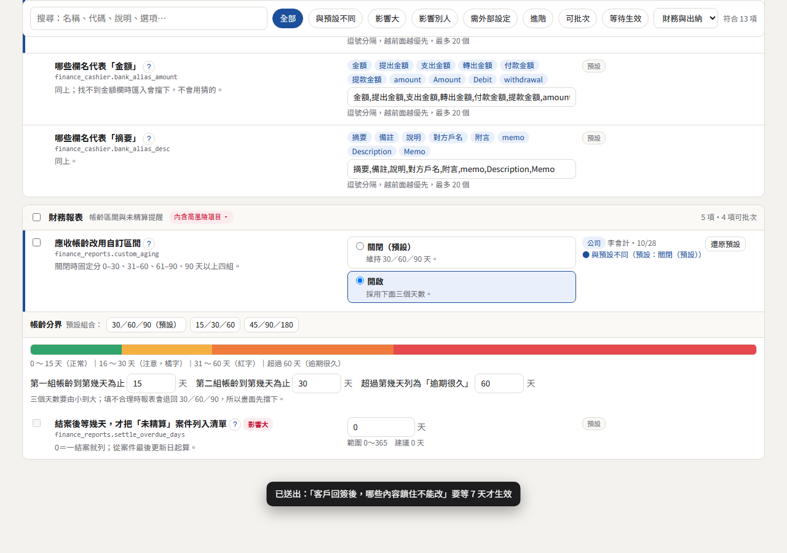
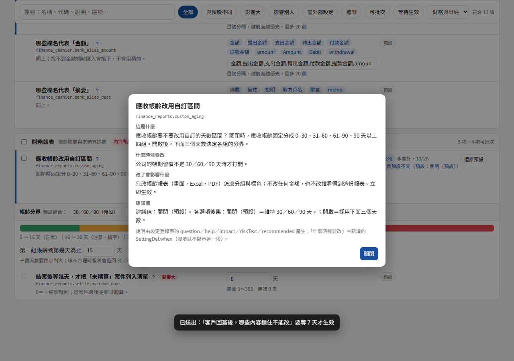
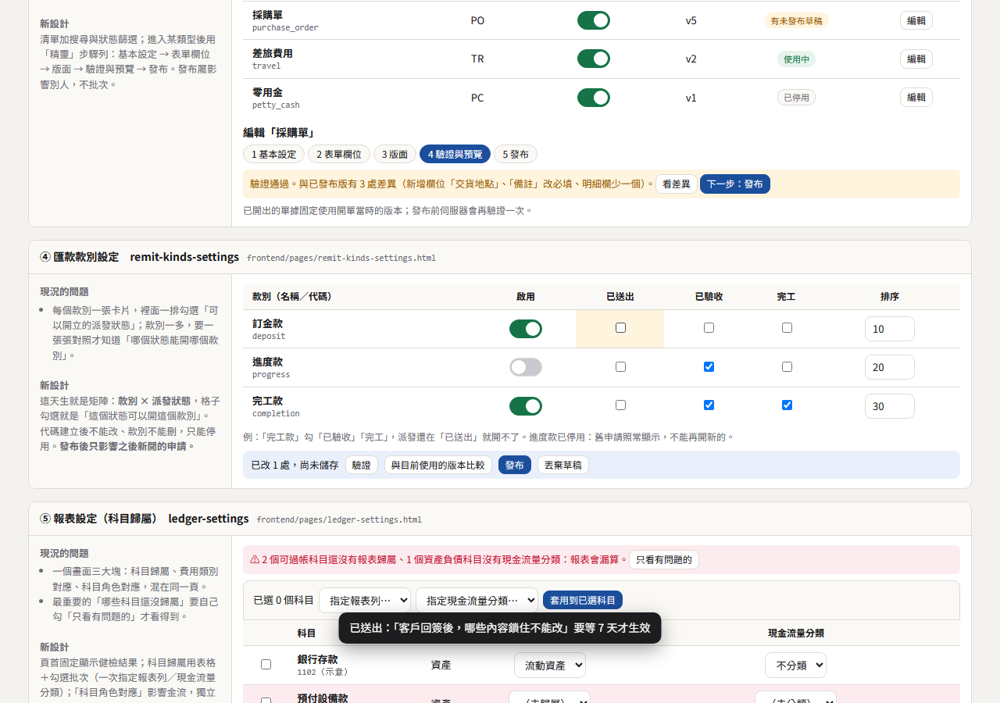
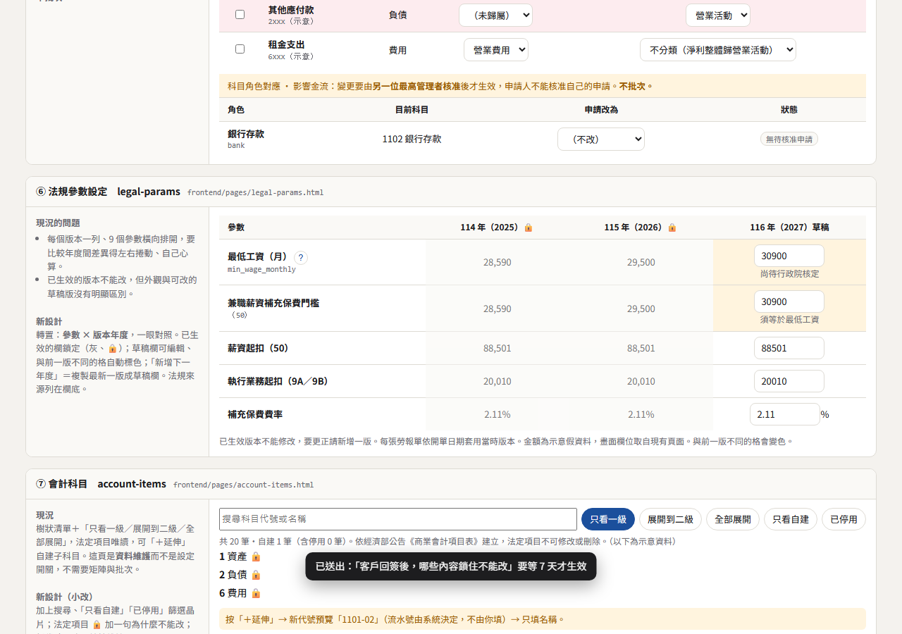
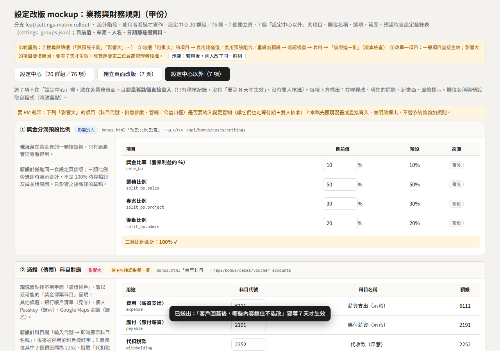

作者 hichan-3 ・ 分支 feat/settings-matrix-rollout ・ 畫面見同資料夾 index.html（假資料；欄位、選項、範圍、預設取自設定登錄表）。範圍：設定中心 20 群組／76 欄、7 個獨立頁、7 個「設定中心以外」的項目。規則依 README／SPEC r2（PM 裁示 M1、N2～N5）。
把「76 個設定散在 20 個群組、逐項開關」改成每一列都有：白話名稱、小字代碼、標籤、一句說明、目前值、來源、與預設不同●；可批次的項目只做「套用建議值／套用預設組合／重設為預設」；影響大的項目永遠逐項，要填原因、要等 N 天才生效，放寬還要第二位最高管理者核准。
| 規則 | 在畫面上怎麼做 |
|---|---|
| M1 批次只限 none／ops | 勾選格只出現在可批次的列；不可批次的列勾選格灰掉、tooltip 寫原因；群組標題的全選自動略過，確認視窗列「已略過 N 項：原因」。批次列只有三顆：套用建議值、套用預設組合、重設為預設（外加取消選取）。營運類（ops）項目在確認視窗多一個「我確認要改這 N 項營運設定」勾選。 |
| 批次不繞過變更管制 | 確認視窗把「放寬方向／要等 N 天」的項目標成「等待生效」並說明：不會立即生效，會依原規則進入等待。 |
| 文字類欄位不畫勾選格 | quote_defaults.estimate_no_prefix、quote_alt.total_text／note_template、finance_cashier.bank_alias_* 共 6 項：不畫勾選格，做成逐列編輯＋即時預覽（客戶看到的樣子、單號樣子、欄名標籤）。 |
| N2 復原這一批 | 套用後吐司「復原這一批」。復原時比對涉及群組的版本；別人改過就整批拒絕，顯示誰、何時、哪一項（可用頁首「示範」按鈕看）。沒有欄位層級的 6 秒復原；單項修改的吐司只說「要還原請到變更紀錄」。 |
| N3 來源 | 只用「預設／公司／等待生效」。本份 76 欄沒有任何一欄有個人設定層，所以沒有「個人」徽章。 |
| N4 說明由登錄表產生 | 「?」四段：這是什麼＝question＋help；什麼時候要改＝新增 SettingDef.when（我先寫了 76 條草稿，附在盤點表備註欄，採用就貼進登錄表）；改了會影響什麼＝impact＋riskText；建議值＝recommended＋各選項後果。 |
| N5 群組風險 | 群組標題不標高低風險，只在內含影響大的項目時顯示「內含高風險項目 ▾」，點開列出是哪幾項。 |
| 用語表 | 畫面不出現 true／false、整數選項代碼、「影子」「閘門」「確認期間」。但登錄表原文有（見 §6），mockup 顯示時改寫，來源仍待改。 |
| 大區 | 小區（內含群組） |
|---|---|
| 報價單 | 送審門檻（quote_approval）／新報價單預設（quote_defaults）／擇一方案：顯示與列印（quote_alt 7 項）／擇一方案：回簽後的鎖定規則（quote_alt 9 項，矩陣）／輸出與個人資料（quote_output、quote_privacy）／補登歷史案件（quote_backfill） |
| 利潤與管銷 | 利潤提醒色帶（profit_warning＋project_margin；表格＋預設組合）／管銷與公益口徑（overhead、profit_rules） |
| 材料與採購 | 材料申請（material_order）／認列採購單（material_recognition） |
| 財務與出納 | 出納頁與對帳單（finance_cashier）／財務報表（finance_reports，含帳齡色帶） |
| 結案與完工 | 結案條件加嚴（case_close_gates）／完工單帶入（completion_note，含「帶入後的樣子」預覽） |
| 提醒與到期 | 到期預警（alerts）／法規參數跨年提醒（legal_params_reminder，月＋日合成一個控制項） |
| 其他 | 變更管制（change_control）／勞報單選派發（payslip_dispatch_picker，只有一項，併入） |
| 項目 | 內容 |
|---|---|
| SettingDef.when | 新增選填欄位；76 條草稿在盤點表備註欄（「什麼時候要改」）。 |
| presets 內容 | profit_warning（3 組）與 finance_reports 帳齡（3 組）是我的提案；其餘群組沒有預設組合。 |
| 需外部設定標籤 | 76 欄裡只有 alerts.cert_warn_days（要到開發者端換發簽章確認檔）。 |
| expected-version | 復原這一批要 publish() 帶 expected_version；mockup 以「群組版本」示範。 |
| 設定中心以外的 7 項 | 全是舊路徑直接寫入（只有稽核紀錄；沒有要等 N 天、沒有雙人核准）。是否納入變更管制要 PM 裁示（見 §7）。 |
我的 76 欄中，26 欄的 label／question／help／impact／riskText／選項含「確認期間」（27 處）或「影子」（4 處，quote_approval.reconfirm_mode 的選項「影子（只記錄）」→ 建議「先試跑（只記錄）」）。「確認期間」建議統一改成「要等 N 天才生效」。欄位清單：alerts 4 欄、case_close_gates.enabled、change_control.confirm_period_days、finance_cashier.receivable_grace_days、finance_reports.settle_overdue_days、legal_params_reminder 2 欄、overhead.default_pct、profit_rules.charity_rate_pct、quote_alt 9 條鎖定規則、quote_approval 4 欄、quote_output.hidden_terms_pdf_mode。










所有目前值、來源、人名、日期、獨立頁與「設定中心以外」的數字（例如法規參數年度金額）都是假資料；欄位名稱取自現有程式與登錄表。復原、確認視窗、版本檢查在 mockup 只是示意，實作時由後端整批驗證、整批寫入。沒有跑任何測試（設計階段，只做文件）。